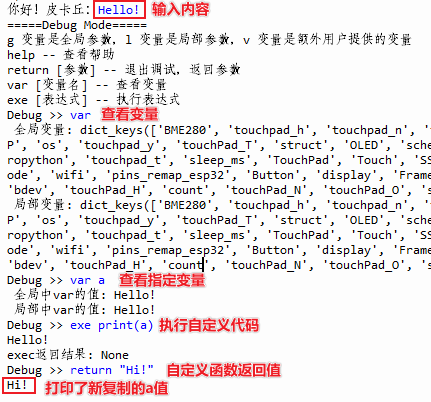

utils – 常见功能模块¶
utils 模块源代码在文件夹 TaoLiSystem/core/utils.py 下，汇集了系统反复调用的一些函数，便于系统开发。
函数¶
- utils.importModule(name)¶
动态导入一个模块，
importModule函数并不是在utils中定义的，main.py 调用时会动态创建这个函数。name– 导入的模块名称。
- utils.convert_ms_to_hms(milliseconds)¶
转化毫秒到时分秒，返回一个元组 (hours, minutes, seconds, remaining_ms) ，元组内元素均为 int 型。
milliseconds– 毫秒
例如:
>>> import time >>> from TaoLiSystem.core import utils >>> utils.convert_ms_to_hms(time.ticks_ms()) (11, 38, 15, 650)
- utils.isEnableWIFI()¶
是否启用 WIFI ，系统内部函数。
- utils.isEnableBluetooth()¶
是否启用蓝牙，系统内部函数。
- utils.enableBluetooth()¶
启用蓝牙，是系统内部逻辑函数。
- utils.disableBluetooth()¶
禁用蓝牙，是系统内部逻辑函数，一般没有用，内核代码限制。
- utils.enableWIFI()¶
启用WIFI，是系统内部逻辑函数。创建一个 wifi 实例，并放在全局变量中，方便程序全局访问。
- utils.disableWIFI()¶
禁用WIFI，从全局变量中禁用 wifi 并释放。
- utils.delete_folder(folder)¶
删除一个空或者非空文件夹下的子目录以及文件。
folder– 文件夹路径
- utils.gc_collect()¶
调用 gc.collect() 反复清理内存，让清理彻底。返回清理之后的可以内存。
- utils.debug(g, l[, None])¶
变量监控与调试工具。
g– 全局变量l– 局部变量v– 额外传入的变量，用于监控变量
使用方法:
from TaoLiSystem.core import utils a = input("你好！皮卡丘：") a = utils.debug(globals(), locals(), a) print(a)
代码输出:
备注
注意直接执行
exe a=10并不会将原代码中的a值改变，因为函数内的变量表与原代码的变量表是相互隔离的。